Sanfte, diskrete Unterstützung bei der Körperpflege – damit Sie sich rundum wohl und gepflegt fühlen, wenn es allein einmal schwerfällt.
Termin anfragen
Mit dem Alter fällt das Bücken schwerer, die Hände werden unruhiger und die Sicht am Bein schlechter. Das Rasieren der Beinhaare wird so schnell zur Herausforderung. Wir übernehmen diese Aufgabe für Sie – behutsam, respektvoll und in aller Ruhe, damit Sie sich in Ihrer Haut wieder rundum wohlfühlen.
Wir arbeiten langsam und vorsichtig, mit warmem Wasser, hautfreundlichem Schaum und einer sauberen, scharfen Klinge – für ein glattes Ergebnis ohne Schnitte oder Reizungen.
Körperpflege ist Vertrauenssache. Wir begegnen Ihnen mit Feingefühl, wahren Ihre Privatsphäre und richten uns ganz nach Ihrem Wohlbefinden.
Auf Wunsch runden wir die Rasur mit einer sanften Feuchtigkeitspflege ab, damit sich die Haut geschmeidig und angenehm anfühlt.
Alles geschieht in Ihrem Tempo und nach Ihren Wünschen – bei Ihnen zu Hause, wo Sie sich am wohlsten fühlen.
Wir kommen zu Ihnen nach Hause – in folgenden Städten:
Sprechen Sie uns an – unverbindlich und persönlich. Wir nehmen uns Zeit für Sie und Ihre Wünsche.
Kontakt aufnehmen